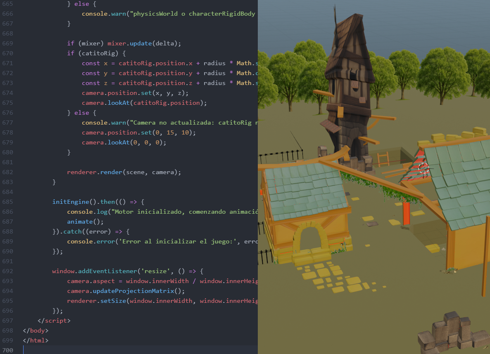

SOON
Por ahora llevo 6 días (8 de Abril)
Gané mucha práctica con el juego de los ganzos jugando futbol, por lo que me inspira y motiva a seguir desarrollando más videojuegos para WEB. Esta vez será uno mas complejo. De disparos, sigilo, recompensas, multiplayer o single.
SOON